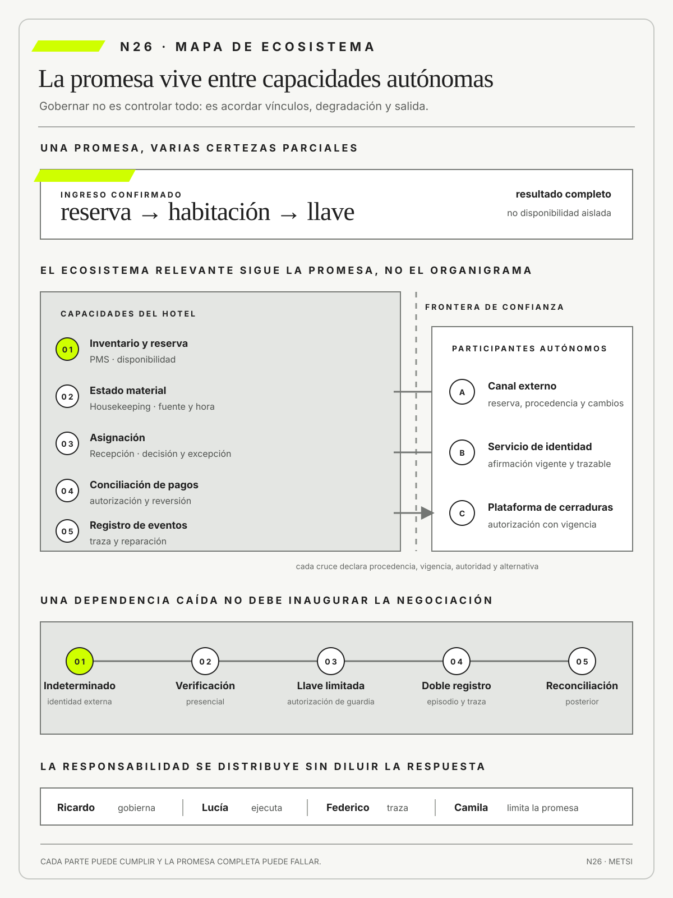

Geoffrey G. Parker
Platform RevolutionNorton · 2016
Explica cómo las plataformas coordinan participantes y cómo sus reglas alteran la creación y captura de valor.

Una promesa distribuida exige compromisos explícitos entre capacidades autónomas y una salida verificable.
Ecosistema de servicios, plataformas y terceros
Ruta de lectura: problema, distinciones, decisiones, prueba, transferencia y preparación.

Nota. SIN NUM. identifica aparatos de orientación y referencia.
Seis referentes y las obras principales utilizadas para construir N26.
Explica cómo las plataformas coordinan participantes y cómo sus reglas alteran la creación y captura de valor.

Analiza efectos de red, apertura y decisiones de gobierno en mercados y ecosistemas de plataforma.

Vincula arquitectura de plataforma, interacción entre participantes y mecanismos de gobierno.

Permite discutir las fronteras de la organización mediante los costos de coordinar, contratar y cambiar de proveedor.

Distingue mecanismos de coordinación y configuraciones organizacionales que explican por qué un ecosistema no se gobierna sólo con contratos.

Sitúa personas, comunicación y cooperación en el centro de los límites arquitectónicos y operativos.
N26 no resume estas fuentes ni las convierte en receta. Las pone en tensión para construir juicio profesional.
¿Cómo gobernar una promesa cuando depende de servicios internos, plataformas compartidas y terceros que ninguna unidad controla por completo?

Cada dependencia necesita confianza, responsabilidad, degradación prevista y una salida verificable.
Una pasajera llega al aeropuerto con pasaje, equipaje despachado y documentación vigente. La aplicación de la aerolínea muestra la tarjeta de embarque. El control de seguridad valida su identidad. Sin embargo, la puerta rechaza el ingreso porque el sistema del operador aeroportuario conserva una modificación de vuelo que la aerolínea ya revirtió. El personal puede ver el conflicto, pero ninguna de las dos organizaciones puede corregir el registro de la otra.
Los primeros tableros no muestran una falla. La venta está confirmada, el pago conciliado, la identidad validada, el vuelo operativo y la puerta conectada. Cada participante cumplió una métrica local. La promesa completa, transportar a esa persona en ese vuelo, quedó sin dueño. Faltan once minutos para el cierre y los equipos discuten si el caso pertenece a reservas, aeropuerto, seguridad o al proveedor que sincroniza la información.
Una explicación atribuye el problema a una demora de integración y propone reintentar. Otra señala una contradicción semántica: para una parte, reprogramado describe el último evento recibido; para la otra, describe la condición vigente. Una tercera ubica la causa en el gobierno: nadie tiene autoridad previamente acordada para admitir a la pasajera cuando los sistemas discrepan. Las tres explicaciones son compatibles con los mismos mensajes exitosos y conducen a decisiones distintas.
El episodio revela que el servicio no vive dentro de una aplicación. Participan la aerolínea, el concesionario, seguridad, el operador de equipajes, una plataforma de identidad, un procesador de pagos y varios proveedores técnicos. Cada actor posee datos, objetivos, obligaciones y ritmos propios. El ecosistema existe aunque nunca haya sido diseñado como un todo. Lo que puede diseñarse es la forma de reconocer dependencias, limitar la confianza y reparar la promesa cuando una parte autónoma no responde como se esperaba.
El equipo reconstruye el recorrido desde la compra hasta la puerta. Para cada capacidad registra quién la ofrece, quién depende de ella, qué evidencia produce, qué condición vuelve inutilizable su resultado y qué alternativa queda disponible. Descubre que el operador de puerta puede emitir una autorización local, pero el procedimiento sólo contempla caída total del sistema. La contradicción entre dos estados válidos no está tratada como modo de degradación.
La decisión provisional no consiste en centralizar todos los sistemas ni en transferir el problema al proveedor. Se habilita una verificación conjunta con alcance limitado, doble registro y autoridad explícita para resolver un único embarque sin modificar la reserva original. La pasajera viaja y el desacuerdo queda abierto para reconciliación. El costo es trabajo manual y una demora visible. La alternativa era sostener la pureza de cada registro y trasladar toda la consecuencia a quien no controla ninguno.
Después del vuelo, la organización evita declarar éxito sólo porque la excepción fue resuelta. Compara veinte modificaciones de último momento, identifica qué estados se contradicen, mide cuánto tarda la reparación y verifica si el mecanismo puede ser usado por otro turno. El mapa no promete control total. Expone fronteras de confianza, opciones de sustitución, autoridades y señales para decidir antes de que una dependencia se transforme en abandono.
N26 abre el Bloque F. Recibe de N25 una mirada sobre flujo, cola y espera, y amplía la unidad de análisis hacia organizaciones, plataformas y servicios autónomos. La pregunta ya no es sólo cómo circula el trabajo dentro de una organización, sino cómo se gobierna una promesa que depende de participantes que pueden cooperar sin quedar subordinados entre sí.
HH-26 retoma el mapa temporal de HH-25 y sigue a una familia que llega a las 22.15 con una reserva prepagada de un canal externo. Lucía Ferreyra encuentra la habitación limpia y disponible, pero el PMS conserva una identidad sin validar y la cerradura no acepta emitir una llave. Mariela Benítez muestra el registro de liberación de Housekeeping. Camila Duarte presenta la confirmación comercial. Federico Müller comprueba que cada integración responde, aunque con estados incompatibles. La evidencia no describe una falla única, sino cuatro verdades parciales que no producen ingreso.

Ricardo Sosa reconstruye el recorrido y descubre dos decisiones manuales fuera de los tableros: Recepción compara apellidos cuando el servicio de identidad se demora y Seguridad habilita una llave temporal sólo con autorización de guardia. Ninguna figura en el contrato con el canal. Elena Acosta rechaza la propuesta inicial de «escalar al proveedor», porque no resuelve qué debe hacer el hotel mientras el proveedor investiga ni quién responde ante la familia.
El mapa HH-26 vincula la promesa «ingreso confirmado» con capacidades, responsables, datos, fronteras de confianza, modos de degradación y rutas de salida. La decisión es habilitar un procedimiento transitorio de verificación presencial y llave limitada, con doble registro y aviso posterior al canal. Federico conserva la trazabilidad técnica, Lucía la evidencia del episodio y Ricardo la autoridad operativa. Camila debe corregir la promesa del canal para no vender como instantáneo un recorrido que depende de validaciones externas.
La consecuencia aceptada es más trabajo durante la contingencia a cambio de no abandonar a la persona frente a una disputa entre sistemas. El acuerdo se revisará después de veinte ingresos por canal externo o ante el primer caso de identidad controvertida, lo que ocurra antes. HH-27 retomará los estados contradictorios y los convertirá en contratos verificables, sin dar por resuelto el ecosistema que HH-26 acaba de hacer visible.
Una promesa distribuida sólo puede gobernarse si las dependencias se tratan como compromisos entre capacidades autónomas y no como flechas neutras entre componentes. Cada vínculo necesita una frontera de confianza, una evidencia observable, un responsable capaz de actuar, un modo de degradación y una salida verificable. El ecosistema no elimina autonomía ni incertidumbre: vuelve discutible qué parte controla cada actor, qué consecuencia queda sin dueño y qué alternativa permanece disponible. Si el gobierno se reduce a disponibilidad técnica o a contratos de compra, todas las partes pueden cumplir localmente mientras el servicio completo falla. La intervención profesional debe diseñar coordinación, contingencia y reparación antes del incidente, y probarlas sobre un recorrido real.
Una promesa distribuida se gobierna cuando capacidades internas y participantes autónomos conservan compromisos verificables, una frontera de confianza y una salida practicable antes de la falla.

N25 y HH-25 hicieron visible que la espera y el trabajo en curso atraviesan el recorrido completo, aun cuando cada área optimice su tramo. N26 extiende ahora esa frontera fuera del hotel: incorpora plataformas compartidas, canales, proveedores y decisiones que ninguna unidad controla por sí sola.
El foco sigue siendo la promesa, pero cambia la pregunta de gobierno. Antes de especificar cada intercambio, hace falta saber qué capacidades dependen unas de otras, dónde cambia la confianza, quién puede actuar y qué salida existe cuando un participante autónomo falla.
ITIL 4 de AXELOS permite leer el servicio como cocreación de valor y no como suma de componentes administrados por separado.
Parker, G. G., Van Alstyne, M. W. y Choudary, S. P. analizan cómo reglas de acceso, interacción y gobierno producen efectos de red y distribuyen valor en plataformas.
Tiwana, A. vincula arquitectura, gobierno y evolución de plataformas.
Skelton, M. y Pais, M. relacionan plataformas internas con interacción de equipos y flujo.
ISO/IEC establece requisitos de gestión para sostener servicios.
Boyens, J. M., Smith, A., Bartol, N., Winkler, K., Holbrook, A. y Fallon, M. integran riesgo de cadena de suministro durante el ciclo de vida.
Rose, S., Borchert, O., Mitchell, S. y Connelly, S. sitúan verificación y acceso en fronteras de confianza explícitas.
CISA desplaza parte de la responsabilidad de seguridad hacia quienes diseñan y proveen productos, una corrección necesaria frente a contratos que cargan todo el riesgo sobre el cliente.
El Reglamento de Datos de la Unión Europea incorpora obligaciones de acceso, portabilidad y cambio en ámbitos definidos, entre ellos los servicios de tratamiento de datos. N26 no lo presenta como un derecho universal aplicable a cualquier proveedor o jurisdicción.
Ross, J. W., Weill, P. y Robertson, D. C. conectan arquitectura con capacidades y modelo operativo.
Hohpe, G. y Woolf, B. aportan patrones para intercambios, mensajería y fallas.
FinOps Foundation hace visible el costo tecnológico como responsabilidad compartida entre ingeniería, finanzas, producto y liderazgo, y en 2026 profundiza un alcance ya ampliado más allá de la nube pública.
FinOps designa una práctica de gestión financiera de tecnología que reúne decisiones de ingeniería, finanzas y negocio. En N26 se utiliza para hacer visibles asignación, consumo y responsabilidad económica de capacidades compartidas, no como sinónimo de reducción automática de costos.
Coase, R. H. permite examinar qué coordinaciones conviene sostener dentro de una organización y cuáles se confían al mercado; Mintzberg, H. muestra que coordinar exige mecanismos diferentes según la estructura y la incertidumbre; Cockburn, A. devuelve la arquitectura a las personas, las comunicaciones y las fronteras concretas de colaboración.
Un ecosistema de servicio reúne participantes autónomos que sostienen una misma promesa mediante capacidades, reglas e intercambios interdependientes. No es una lista ampliada de proveedores ni una arquitectura encerrada en el hotel. La unidad de análisis es el recorrido que una persona espera completar, aunque cada parte pertenezca a una organización distinta.
En HH-26, reserva, identidad, pago, disponibilidad y cerradura intervienen en un solo ingreso. El mapa debe mostrar qué afirmación entrega cada actor, quién puede cuestionarla y cómo se repara una contradicción. También debe incorporar planillas, llamados y autorizaciones de turno, porque el trabajo manual forma parte del sistema aun cuando no aparezca en una API.
La decisión profesional consiste en reconocer qué coordinaciones son indispensables y cuáles admiten sustitución o degradación. El mapa conserva participantes omitidos, incentivos y efectos laterales como incertidumbres explícitas. Se revisa después de episodios ordinarios y adversos, no cuando todos los componentes declaran disponibilidad por separado.
El límite del ecosistema se traza a partir de la promesa y no de la propiedad jurídica. Si un canal decide qué oferta ve el huésped, si una red de pagos condiciona la confirmación o si una empresa de cerraduras determina cuándo puede abrirse una habitación, esos participantes forman parte del sistema relevante aunque no integren el organigrama. La inclusión no los vuelve equivalentes: cada uno aporta una capacidad, persigue incentivos propios y conserva márgenes de decisión diferentes. Una representación útil distingue relaciones contractuales, intercambios técnicos y dependencias operativas para evitar que la existencia de un contrato se interprete como control efectivo.
Una capacidad de servicio combina personas, información, tecnología y autoridad para producir un resultado repetible bajo condiciones definidas. No equivale a una aplicación, un equipo o una función del organigrama. Su nombre expresa qué debe poder lograrse y no qué componente se compró o quién lo administra.
Entregar una habitación asignable exige inventario, limpieza, cerradura, identidad, autoridad de Recepción y posibilidad de resolver una excepción. HH-26 contrasta el camino ordinario con una llegada tardía, una habitación accesible y una dependencia caída. Si el resultado sólo aparece cuando interviene alguien con conocimiento privado, la capacidad todavía no pertenece a la organización.
La evidencia combina episodios, tiempos, decisiones y consecuencias para el huésped. El cierre declara población, nivel mínimo, responsable y condición de revisión. Una capacidad puede depender de acuerdos que su responsable no controla, por lo que prometerla exige reconocer esas fronteras y diseñar una salida antes de ampliar alcance.
Una capacidad también necesita condiciones operativas explícitas. «Entregar una habitación» cambia de significado si se excluyen llegadas nocturnas, fallas de conectividad o necesidades de accesibilidad. Por eso el análisis registra volumen, ventana temporal, recursos, autoridad y criterio de éxito. El indicador no se elige por comodidad técnica, sino por su relación con el resultado: una respuesta del PMS puede ser rápida y, sin embargo, no producir una habitación utilizable. Probar la capacidad implica observar el recorrido completo, identificar qué trabajo compensa sus fallas y decidir si ese trabajo es parte diseñada del servicio o una adaptación frágil.
Una plataforma compartida ofrece capacidades gobernadas que otros equipos utilizan para construir y operar servicios. No es infraestructura neutral: sus interfaces, estándares, prioridades y reglas de evolución distribuyen posibilidades y restricciones. Centralizar una función puede reducir coordinación y, al mismo tiempo, concentrar dependencia.
En Hotel Horizonte, identidad y pagos sirven a varios recorridos. HH-26 observa adopción útil, tiempo de integración, confiabilidad, soporte y costo de salida, no la cantidad de consumidores registrados. Una plataforma que obliga a cada turno a mantener una planilla paralela puede exhibir disponibilidad técnica y seguir trasladando trabajo a la operación.
El gobierno de la plataforma define quién prioriza, quién financia capacidad, qué cambios requieren aviso y cómo se atiende una excepción. La prueba incluye un consumidor nuevo, una versión incompatible y la ausencia de la persona habitual. La expansión sólo se justifica si mejora recorridos concretos sin volver inviable la reparación ni encerrar a los participantes.
La relación entre plataforma y equipos consumidores es recíproca. La plataforma necesita señales sobre adopción, errores y necesidades locales; los consumidores necesitan un compromiso verificable sobre estabilidad, soporte y evolución. Si sólo se mide cantidad de integraciones, puede premiarse la dependencia mientras crece el costo de cada cambio. Una revisión madura observa tiempo hasta el primer uso valioso, frecuencia de excepciones, esfuerzo de integración y capacidad de abandono. También distingue un estándar común que reduce variación de una imposición central que borra diferencias necesarias entre recorridos.
N26 distingue una plataforma interna de una plataforma multilateral. La primera ofrece capacidades a equipos o servicios de una organización y se juzga por autonomía, confiabilidad, soporte y costo de integración, como proponen Skelton y Pais (2019) para plataformas orientadas al flujo de equipos. La segunda coordina grupos de participantes con reglas de acceso e interacción capaces de producir efectos de red, asunto central en Parker, Van Alstyne y Choudary (2016). Un canal externo puede funcionar como plataforma multilateral; el conjunto de identidad y pagos del hotel puede ser una plataforma interna. Compartir infraestructura no basta para atribuir dinámica de mercado.
La distinción modifica métricas y gobierno. En la plataforma interna interesa si Recepción o un nuevo canal pueden descubrir, probar, usar y abandonar una capacidad sin favores informales. En la multilateral también importan comisión, visibilidad, acceso a datos, cambios unilaterales y distribución de poder entre hotel, canal y huéspedes. Mezclar ambas bajo “cantidad de consumidores” puede celebrar dependencia centralizada o interpretar adopción obligatoria como efecto de red. El mapa registra configuración, participantes, autoridad sobre reglas y alternativa practicable.
Un tercero crítico es un participante externo cuya falla o decisión puede comprometer una promesa material. La criticidad no coincide necesariamente con gasto, prestigio ni frecuencia de uso. Surge de concentración, sustituibilidad, tiempo de recuperación, acceso a evidencia y alcance del daño.
El canal de reservas es crítico cuando concentra demanda y excepciones, aun si el contrato lo presenta como un intermediario. HH-26 simula indisponibilidad, datos incompletos y un cambio unilateral. La pregunta no es sólo cuánto tarda en volver, sino qué puede hacer el hotel mientras tanto y qué población queda sin alternativa segura.
La clasificación se documenta con fuente, responsable y fecha. Puede cambiar cuando aparece otra vía, se modifica una dependencia o una obligación se vuelve más severa. Un acuerdo de nivel de servicio, conocido por la sigla SLA, o una certificación aportan evidencia, pero no sustituyen un ensayo de contingencia ni liberan al hotel de responder frente a la persona afectada.
La criticidad debe analizarse por escenario y no como una etiqueta permanente. Un servicio de mensajería puede ser secundario para confirmar una reserva ordinaria y crítico para comunicar una evacuación; un proveedor de identidad puede admitir demora durante una consulta y bloquear por completo una llegada nocturna. El registro vincula dependencia, población, consecuencia, tiempo máximo tolerable y alternativa practicable. Esa matriz permite decidir dónde exigir notificación de cambios, dónde duplicar capacidades y dónde aceptar dependencia. También evita invertir en redundancia costosa para riesgos bajos mientras una única decisión manual continúa sin reemplazo.
La responsabilidad sobre una capacidad reúne autoridad persistente para priorizar, observar, coordinar y reparar una promesa. No es un contacto para escalar ni una responsabilidad nominal sin recursos. La persona responsable debe poder negociar con terceros, limitar exposición, financiar recuperación y explicar por qué una decisión sigue vigente.


El ingreso conserva una responsabilidad integral aunque identidad, pagos, inventario y cerraduras pertenezcan a áreas diferentes. HH-26 registra qué decisiones puede tomar la autoridad asignada, cuáles requieren otra intervención y qué señales recibe. Un nombre en una matriz no alcanza si, durante una llegada nocturna, nadie puede autorizar una llave temporal o compensar al huésped.
El rol se prueba mediante una excepción y un cambio de dependencia. Si la respuesta depende de favores o memoria privada, se documenta la fragilidad y se corrige el acuerdo. La responsabilidad completa no implica ejecutar todo, sino asegurar que obligaciones distribuidas formen una capacidad gobernable y revisable.
La autoridad se vuelve observable en decisiones concretas: detener una campaña, limitar un canal, autorizar una contingencia, exigir evidencia al proveedor o financiar una reparación. Una matriz de responsabilidades que sólo asigna consultas e información no resuelve quién puede elegir bajo presión. En HH-26 se comparan las decisiones declaradas con las efectivamente tomadas durante el incidente. Si Ricardo debe esperar una autorización que nadie atiende, la brecha no se corrige agregando su nombre a otro documento. Se modifica el derecho de decisión, el acceso a señales o el mecanismo de reemplazo, y luego se vuelve a ensayar.
Un mapa de dependencias representa qué necesita cada capacidad, en qué secuencia y bajo qué supuestos. Se diferencia de un diagrama de componentes porque incluye datos, autoridad, contratos, decisiones manuales y condiciones de recuperación. Cada vínculo debe expresar qué afirmación transporta y qué ocurre si resulta tardía o falsa.
En HH-26, la llave depende de identidad, pago, estado de habitación y autorización local. Trazas, entrevistas, incidentes y ejercicios de conmutación contrastan esa representación. La discrepancia entre el dibujo y la práctica no se corrige de inmediato: puede revelar trabajo invisible, una excepción legítima o una dependencia que nadie gobierna.
El mapa sirve para elegir dónde invertir, qué aislar y qué probar primero. Debe declarar alcance y fecha, porque una dependencia puede cambiar sin alterar la interfaz visible. Si sólo inspecciona software, deja fuera la coordinación que sostiene la promesa y produce una seguridad analítica ficticia.
Las dependencias no son todas del mismo tipo ni actúan siempre. Conviene distinguir vínculos obligatorios, condicionales y de recuperación, además de su dirección y duración. La identidad es necesaria para el camino ordinario, pero la autorización de guardia aparece sólo durante la contingencia; la conciliación se ejecuta después y puede reparar una decisión provisional. Esta temporalidad permite analizar propagación y contención. Un mapa que sólo dibuja flechas permanentes sugiere que toda falla produce el mismo efecto y oculta las decisiones que activan o desactivan rutas alternativas.
Una frontera de confianza marca dónde cambian las garantías, la autoridad y la evidencia aceptada. Puede atravesar una organización, una red o un componente; no coincide automáticamente con ninguno de esos límites. Al cruzarla, una afirmación requiere reglas explícitas de verificación, vigencia y tratamiento de contradicciones.
El PMS no debería aceptar cualquier estado enviado por el canal como si tuviera idéntica procedencia. HH-26 registra identidad del emisor, permisos, frescura, reconciliación y evidencia de acceso. También prueba qué hace Recepción cuando dos fuentes válidas discrepan, porque rechazar todo puede ser tan dañino como confiar sin controles.
La decisión equilibra exposición y continuidad. Una frontera demasiado rígida vuelve inviable la atención; una demasiado permeable concentra riesgo y hace irreconstruible el episodio. Los controles se revisan cuando cambia un proveedor, una población o el daño posible, y siempre conservan una vía de reparación comprensible.
La confianza se asigna a afirmaciones específicas y no a organizaciones completas. El hotel puede confiar en que el canal autentica una cuenta y, al mismo tiempo, exigir otra prueba para aceptar que una habitación es accesible. Cada cruce declara procedencia, propósito, vigencia y autoridad para corregir. El principio reduce dos errores simétricos: aceptar datos por prestigio del emisor y duplicar verificaciones sin relación con el daño. Durante la prueba, Federico altera frescura y procedencia mientras Lucía decide con qué evidencia todavía puede actuar; así se observa si la frontera protege sin impedir una reparación legítima.
Responsabilidad compartida distribuye tareas entre participantes sin diluir quién responde por la consecuencia completa. No significa que todos sean responsables de todo. Cada obligación debe vincularse con autoridad, evidencia, tiempo de respuesta y una persona capaz de coordinar cuando el reparto falla.
El proveedor protege la plataforma; el hotel gobierna configuración, accesos, promesa comercial y reparación al huésped. HH-26 transforma ese enunciado genérico en decisiones verificables para una llegada bloqueada. Matrices, contratos y guías operativas aportan evidencia sólo si coinciden con lo que los turnos pueden ejecutar bajo presión.
El modelo se revisa con una falla que cruza varias capas. Si cada parte cumple su indicador y nadie restituye el ingreso, la distribución es incompleta. El hotel puede delegar tareas técnicas, pero no la obligación de reconocer el daño, explicar el límite ni sostener una alternativa segura.
Las zonas más peligrosas son los vacíos y las superposiciones. En un vacío, cada participante supone que otro verifica o comunica; en una superposición, dos áreas actúan con criterios incompatibles. El expediente de HH-26 enumera obligaciones antes, durante y después del incidente y las conecta con una señal de cumplimiento. La evidencia no se limita a una declaración contractual: incluye quién recibió la alerta, cuánto tardó en decidir y cómo se reparó al huésped. Esa reconstrucción permite negociar acuerdos precisos sin convertir la responsabilidad compartida en una excusa para diluir la rendición de cuentas.
La degradación diseñada mantiene una parte segura y valiosa de la promesa cuando una dependencia falla. No equivale a tolerar en silencio una calidad inferior. Define antes del incidente qué capacidad mínima continúa, para quién, durante cuánto tiempo y bajo qué señal debe detenerse.
En HH-26, Recepción puede entregar una llave temporal bajo autorización cuando identidad externa no responde. La medida requiere registro, verificación posterior y límites que protejan seguridad y privacidad. El ejercicio incluye una habitación accesible y una llegada nocturna para comprobar que la contingencia no dependa de condiciones excepcionales favorables.
Algunas obligaciones no admiten degradación y obligan a detener. Otras permiten un servicio reducido si la persona comprende la situación y conserva reparación. El modo se revisa por duración, errores y trabajo desplazado; si se vuelve rutina, dejó de ser contingencia y pasó a ocultar una capacidad incumplida.
Diseñar degradación requiere una escala de capacidades, no una alternativa binaria entre funcionamiento total y caída. El hotel puede mantener consulta, reserva provisional o ingreso asistido bajo condiciones distintas, pero no presentar cada nivel como equivalente. Para cada modo se fijan datos mínimos, autoridad, población incluida, duración máxima y criterio de salida. Una señal visible informa a Comercial qué no puede prometer y a Recepción qué debe explicar. Si el modo reducido supera su ventana o acumula decisiones pendientes, la respuesta correcta puede ser suspender antes que normalizar una operación insegura.
El riesgo de concentración aparece cuando varias capacidades dependen de un mismo proveedor, dato, servicio o punto de decisión. La diversidad nominal no garantiza independencia: dos canales pueden usar la misma nube y múltiples recorridos pueden apoyarse en una única identidad.
HH-26 construye escenarios de falla común y no se limita a disponibilidad histórica. Observa cuántas promesas se afectan, qué poblaciones carecen de alternativa y cuánto tiempo necesita la recuperación. El mapa también incluye concentración de conocimiento, porque una sola persona puede ser un punto crítico aunque la infraestructura esté replicada.
Reducir concentración puede requerir redundancia, aislamiento, sustitución o una forma segura de operar sin la dependencia. Cada opción agrega costo y complejidad; por eso se compara contra el daño evitado y se prueba. Duplicar proveedores sin ensayar conmutación sólo multiplica contratos y mantiene la misma fragilidad.
La correlación importa más que el número de alternativas. Dos proveedores alojados en la misma región, dos canales que usan el mismo servicio de identidad o dos equipos que dependen de una única persona conservan un punto común de falla. HH-26 construye un escenario que elimina esa base compartida y observa qué capacidad queda. La decisión puede ser separar dominios, reservar una vía manual o aceptar el riesgo con un límite de exposición. El expediente registra el costo de la medida y el riesgo residual para que la diversificación no se convierta en un objetivo abstracto.
Portabilidad y salida preservan la posibilidad de mover datos, procesos y responsabilidades sin quebrar la promesa. No son una cláusula ornamental ni una exportación de archivos al final del contrato. Incluyen formatos, derechos, reglas, secuencias, competencias, costos y continuidad durante la transición.
El hotel debe poder recuperar reservas, definiciones de estado y evidencia si cambia de canal. HH-26 ensaya una extracción, valida completitud y reconstruye un recorrido con el sistema alternativo. La prueba muestra dependencias ocultas en credenciales, conocimiento operativo y decisiones comerciales que un archivo técnicamente correcto no conserva.
La opción de salida se gobierna desde el inicio y se revisa con cada cambio material. Una migración técnicamente posible puede ser operacionalmente inviable si demora más que la tolerancia del servicio o exige trabajo que nadie puede sostener. Declarar ese límite permite negociar, invertir o aceptar dependencia con conciencia.
El Reglamento de Datos de la Unión Europea (2023) aporta requisitos concretos para facilitar el cambio y la portabilidad entre servicios de tratamiento de datos, incluida información sobre formatos, restricciones y procedimientos. Su aplicación depende del tipo de servicio, del ámbito territorial y de excepciones previstas por la norma. Por eso HH-26 separa tres bases: derecho u obligación aplicable, cláusula contractual negociada y capacidad técnica propia. Una cláusula inspirada en la norma puede ser conveniente fuera de su alcance, pero no debe presentarse como mandato jurídico sin análisis competente.
La salida se ensaya antes de necesitarla. El ejercicio selecciona reservas activas, exporta datos y reglas, reconstruye estados en una alternativa y mide decisiones que todavía requieren al proveedor saliente. También comprueba continuidad durante la transición y revocación posterior de accesos. La frecuencia depende de criticidad y cambio, no de un calendario universal. Un ensayo antiguo pierde fuerza cuando se modifica formato, subcontratación, volumen o población, aunque la cláusula contractual permanezca idéntica.
Una prueba de salida recorre más que la descarga de datos. Verifica semántica, orden, historia de cambios, permisos, documentación, competencias y capacidad de operar durante la transición. El hotel toma una muestra representativa, reconstruye reservas activas y compara estados con el sistema de origen. También mide cuántas decisiones requieren asistencia del proveedor saliente. Si la exportación entrega archivos completos pero nadie puede interpretar excepciones, la portabilidad es nominal. Los hallazgos se traducen en cláusulas, automatizaciones o entrenamiento y vuelven a probarse antes de que una urgencia obligue a migrar.
La gobernanza del ecosistema coordina reglas comunes entre participantes que conservan autonomía. No centraliza toda decisión ni supone que el contrato resolverá una caída. Combina foros, estándares, incentivos, métricas, escalamiento, práctica de contingencia y mecanismos para revisar acuerdos.
Hotel, canal y proveedor definen juntos estados, avisos y reparación, pero mantienen responsabilidades diferentes. HH-26 utiliza incidentes y cambios de interfaz para observar si el gobierno anticipa consecuencias o sólo distribuye culpa después. Las personas afectadas deben tener una vía visible cuando el conflicto entre organizaciones bloquea su recorrido.
El participante con más poder puede imponer costos que el mecanismo formal no corrige. Por eso la gobernanza registra quién puede proponer, vetar, financiar y salir, además de quién ejecuta. Su eficacia se mide por la capacidad de sostener y reparar la promesa, aprender del episodio y modificar reglas sin borrar la autonomía necesaria.
Los incentivos forman parte del mapa. El canal puede beneficiarse al confirmar pronto, el proveedor puede optimizar disponibilidad de su componente y el hotel absorber compensaciones en el mostrador. Un indicador compartido no elimina esa diferencia. HH-26 asigna a cada parte la señal que controla, la consecuencia que puede producir y la obligación de comunicar cambios. El foro conjunto revisa episodios y decisiones, mientras la autoridad del hotel conserva la responsabilidad frente al huésped. Gobernar cooperación no equivale a suponer intereses alineados.
La cadencia de gobierno se vincula con decisiones observables. Una revisión periódica examina incidentes, cambios próximos, concentración, desempeño de contingencias y reclamos de personas afectadas. Las excepciones no se aceptan indefinidamente: tienen responsable, fecha y prueba de cierre. Los participantes conservan derecho a cuestionar evidencia y a registrar desacuerdo cuando los incentivos no coinciden. En HH-26, el foro conjunto no reemplaza la autoridad operativa del hotel; la prepara con información y acuerdos para que una caída real no inaugure la negociación que debió ocurrir antes.
HH-26 representa la promesa de ingreso como una red de capacidades y compromisos, no como un catálogo de aplicaciones. Cada casillero exige una fuente y una persona capaz de actuar; lo desconocido permanece visible como hipótesis pendiente.
El mapa se ensaya con una reserva ordinaria y con la caída del canal externo durante un ingreso accesible. Si Lucía no puede ejecutar la contingencia sin llamar a Federico, la capacidad todavía depende de conocimiento privado aunque el diagrama esté completo.
La lectura del instrumento empieza por una sola promesa y sigue sus dependencias hasta una decisión observable. No se completan los doce campos como inventario independiente: una frontera debe corresponder a un intercambio, una señal debe permitir actuar sobre una dependencia y una reparación debe devolver coherencia al estado afectado. Las contradicciones permanecen anotadas con su fuente. Esa disciplina permite comparar versiones del mapa y reconocer si una nueva integración amplió capacidad o sólo agregó otro participante que debe coordinarse.
El expediente adjunta al menos un episodio real, un escenario adverso y una decisión de gobierno. El episodio evita modelar un sistema imaginado; el escenario hace visible la fragilidad; la decisión demuestra para qué sirve la representación. Después del ensayo, el equipo registra qué vínculo faltaba, qué supuesto resultó falso y qué obligación necesita otro acuerdo. La validez del mapa no se presume por su prolijidad: se sostiene mientras otra persona puede usarlo para anticipar, contener y reparar una interrupción concreta.
La versión completada de HH-26 enumera, en lugar de aludir a ellos, los cinco servicios internos del episodio: inventario y reserva en el PMS, estado material de Housekeeping, asignación de Recepción, conciliación de pagos y registro operacional de eventos. Distingue tres proveedores: el canal externo, el servicio de identidad y la plataforma de cerraduras. Las dos decisiones manuales son comparar identidad con evidencia disponible y emitir una llave limitada con autorización de guardia. Esta enumeración permite comprobar límites y no debe interpretarse como arquitectura exhaustiva del hotel.
Cada vínculo recibe una condición y una alternativa. El canal debe transmitir reserva, procedencia y cambios; si queda indisponible, el hotel conserva una copia operativa limitada y registra conciliación pendiente. Identidad aporta una afirmación vigente y trazable; ante resultado indeterminado, Recepción ejecuta verificación presencial dentro de criterios documentados. Cerraduras reciben una autorización con tiempo de validez; si el servicio central no emite, Seguridad puede crear una llave limitada y auditable. Pago conserva autorización y ruta de reversión; Housekeeping mantiene la condición material con fuente y hora. Ninguna contingencia inventa que el estado externo fue confirmado.
El mapa registra responsabilidad completa en Ricardo, autoridad de ejecución en Lucía y responsabilidad técnica por contratos y trazas en Federico. Camila debe limitar la promesa del canal a lo que la capacidad puede sostener. El escenario adverso combina llegada a las 22.15, reserva accesible y demora de identidad. La salida resulta practicable sólo si el turno aloja sin perder restricciones, conserva datos mínimos, informa la condición provisoria y reconcilia después sin duplicar reserva ni cobro. El ensayo mide tiempo, decisiones manuales, acceso a evidencia y carga adicional.
La prueba de concentración descubre que canal e identidad dependen de la misma región de nube. Contratar otro canal no diversifica ese modo de falla. HH-26 registra la base común, el tiempo tolerable y la opción manual; luego decide si aislar, duplicar o aceptar el riesgo. FinOps Foundation (2026) permite asignar el costo tecnológico de esa decisión entre quienes consumen y gobiernan la capacidad, pero la elección se justifica por continuidad y daño, no sólo por ahorro. El mapa se revisa ante cambio de proveedor, incidente severo o nueva población.
Un hospital coordina turnos con obras sociales, laboratorios, identidad provincial y servicios internos. Cada actor conserva autonomía, pero la persona experimenta un único recorrido.
El mapa distingue qué puede resolver el hospital, qué debe acordar y qué necesita una vía degradada. Una autorización externa ausente no se convierte automáticamente en abandono clínico.
La promesa se formula como acceder a una prestación segura en una ventana clínica, no como obtener una respuesta exitosa del sistema de turnos. El recorrido incorpora orden médica, cobertura, identidad, disponibilidad del profesional, preparación y comunicación al paciente. Para una práctica urgente, la demora de la obra social tiene una consecuencia diferente que para un control programado. Esa distinción modifica criticidad, tiempo tolerable y autoridad de contingencia.
La prueba simula una autorización tardía durante un turno ya asignado. Admisión conserva el episodio, un profesional autorizado decide si la atención puede continuar y el área administrativa reconcilia después la cobertura. El hospital registra qué dato aceptó provisionalmente, quién asumió el riesgo y cómo informó a la persona. Si la única salida es «llamar a alguien conocido» o cancelar sin evaluar la necesidad clínica, el ecosistema carece de degradación diseñada aunque cada proveedor cumpla su contrato.
HH-26 permite gobernar la promesa sin fingir control total sobre el ecosistema.
Un equipo presenta un diagrama con servicios, colas y APIs y lo llama mapa de ecosistema.
No aparecen operadores, proveedores, contratos, decisiones manuales, concentración ni salida. El dibujo explica conectividad y oculta la promesa.
La arquitectura se vuelve útil cuando relaciona dependencias con autoridad, consecuencias y reparación.
La prueba recorre una llegada desde el canal hasta la llave y marca cada participante capaz de detenerla. Se ejecuta primero con todos los servicios disponibles y luego con identidad externa caída, una habitación accesible y Camila sosteniendo la promesa comercial.
Ricardo debe mantener una parte segura del servicio, Lucía debe reconocer el estado y Elena debe saber qué riesgo residual acepta. Después se reemplaza temporalmente al proveedor crítico con el mecanismo de salida documentado y se verifica que reservas, reglas y trazas sigan utilizables.
N26 aprueba si una persona ajena al mapa puede explicar dónde cambia la confianza, quién coordina la excepción y cómo se repara al huésped. Si el recorrido sólo puede sostenerse mediante contactos informales, la promesa todavía no pertenece al ecosistema gobernado.
La devolución de la prueba separa tres resultados. Una falla de representación exige corregir el mapa; una falla de acuerdo exige negociar autoridad, tiempo o evidencia; una falla de capacidad exige invertir, limitar la promesa o diseñar otra vía. Confundirlos conduce a agregar documentación cuando falta poder de decisión o a comprar tecnología cuando el problema es semántico. Elena acepta ampliar el alcance sólo si el expediente identifica cuál de esas fallas apareció, quién modificará la condición y qué episodio posterior permitirá verificar que el cambio produjo una capacidad efectiva.
La revisión conserva además el riesgo residual y la población todavía excluida, para impedir que una mejora parcial se comunique como garantía universal del ecosistema.
Esa reserva queda asociada a una fecha y una autoridad concretas.

Mapear un ecosistema simplifica relaciones que cambian y puede dar a quien dibuja una apariencia de control inexistente.
Enumerar sistemas y proveedores no muestra qué promesa los conecta ni cómo una falla atraviesa sus fronteras. El mapa debe seguir al huésped, no al organigrama de compras.
Un diagrama de APIs omite decisiones manuales, incentivos contractuales y capacidad de compensar. Esas relaciones pueden ser más críticas que la conectividad técnica.
Nombrar a una persona responsable sin presupuesto, información ni poder sobre terceros produce un escalamiento ficticio. El rol debe probarse durante una excepción realista.
Aceptar una certificación o un SLA como evidencia completa impide examinar cambios, subcontratación y reparación. La opacidad contractual no elimina la responsabilidad del hotel.
Dos proveedores distintos pueden depender de la misma nube, identidad o fuente de datos. La diversidad nominal no reduce un punto común de falla.
La confianza organizacional necesita evidencia proporcionada al daño posible. La verificación acordada protege la relación porque permite discutir una desviación antes de convertirla en acusación.
Un modo degradado sin duración, población ni umbral de salida normaliza una promesa inferior. La contingencia debe conservar seguridad y disparar reparación.
Exportar datos no equivale a recuperar reglas, secuencias, competencias ni autoridad. La sustituibilidad se demuestra mediante un ensayo, no mediante una cláusula.
Las planillas, llamados y decisiones de turno sostienen capacidades cuando la integración falla. Omitirlos produce una arquitectura aparentemente limpia e incapaz de operar.
El contrato fija obligaciones, pero no coordina por sí solo una caída ni compensa a una persona. Gobierno también requiere señales, foros, decisiones y práctica de contingencia.

N26 desplaza la responsabilidad profesional desde el componente propio hacia la promesa que atraviesa organizaciones. Diseñar arquitectura implica ahora negociar garantías, verificar terceros, preparar degradación y conservar una salida cuando nadie posee control total.
Esta mirada modifica la contratación. Comparar proveedores por precio y funciones resulta insuficiente si no se examinan dependencias, derechos de decisión, observabilidad, portabilidad y reparación. Una propuesta económica puede ocultar que la organización no accederá a eventos críticos, que el proveedor cambiará condiciones sin una ventana suficiente o que retirar datos exigirá meses. El análisis profesional traduce cada cláusula en una capacidad operativa: qué podrá observar el hotel, quién actuará durante una caída y cómo continuará el servicio mientras se disputa una responsabilidad.
También cambia la arquitectura interna. Un equipo de plataforma no se evalúa por cantidad de servicios disponibles, sino por la autonomía segura que habilita a quienes los usan. Documentación, interfaces y automatización reducen carga sólo cuando permiten comprender límites y recuperarse de errores. Si cada excepción requiere convocar a especialistas centrales, la plataforma concentra dependencia aunque tenga una interfaz moderna. La evidencia combina tiempo hasta una decisión, calidad de la degradación y capacidad de un turno para resolver sin privilegios extraordinarios.
La dirección conserva una responsabilidad que ningún contrato puede transferir. Puede distribuir tareas, alojar datos o comprar una identidad digital, pero sigue respondiendo por la promesa realizada y por la reparación. Esa responsabilidad exige presupuesto de salida, autoridad para limitar una integración y conversaciones periódicas con quienes operan las fronteras. El mapa de ecosistema se vuelve entonces un instrumento de inversión y gobierno: muestra dónde una mejora local aumenta exposición común y qué capacidad conviene desarrollar antes de ampliar el servicio.
Mapear un ecosistema simplifica relaciones que cambian y puede dar a quien dibuja una apariencia de control inexistente. Los acuerdos comerciales distribuyen poder de manera desigual; por eso criticidad, confianza y portabilidad deben revisarse con quienes operan y reciben las consecuencias.
La dependencia no es necesariamente un defecto. Especializar puede mejorar seguridad, escala o acceso a conocimiento difícil de reproducir. El problema aparece cuando la organización confunde beneficio con control o no conoce qué supuesto vuelve aceptable la relación. N26 no prescribe internalizar todo. Exige comparar el valor obtenido con concentración, costo de cambio, exposición de datos y capacidad de sostener una alternativa. Una dependencia crítica puede aceptarse si su falla está delimitada, su salida fue ensayada y existe autoridad para activar la contingencia.
La portabilidad también posee límites. Exportar una tabla no restituye reglas, historial, identidades, permisos ni acuerdos semánticos. Una prueba de salida debe reconstruir una capacidad mínima en otro entorno y medir pérdida, tiempo, costo y trabajo manual. Si la exportación sólo sirve al proveedor original, la cláusula de portabilidad es nominal. En Hotel Horizonte, trasladar reservas sin conservar accesibilidad o autoridad de modificación produciría una copia técnicamente correcta e inútil para operar. La salida se diseña desde la consecuencia que debe mantenerse.
Los mapas envejecen cuando se actualizan sólo durante proyectos. Nuevas integraciones, cambios societarios y prácticas informales alteran la red sin pasar por una revisión central. Por eso cada vínculo crítico tiene una señal de cambio y una persona que puede confirmar su vigencia. Facturación, inventario de accesos y registros de incidentes permiten detectar dependencias no declaradas. La revisión no intenta capturar todo el ecosistema; prioriza los cambios capaces de modificar una promesa, una frontera de confianza o una condición de reparación.
Finalmente, la búsqueda de resiliencia puede trasladar costos a actores con menos poder. Exigir redundancia a un proveedor pequeño, duplicar registros o imponer disponibilidad continua puede volver inviable una relación valiosa. La decisión debe considerar proporcionalidad y alternativas colaborativas, como acuerdos de contingencia compartidos o una degradación explícita. Gobernar el ecosistema no significa maximizar control unilateral, sino sostener una promesa común con responsabilidades comprensibles, evidencia suficiente y una distribución defendible de cargas y beneficios.
El mapa de N26 permite localizar dependencias y responsables, pero todavía no demuestra que dos participantes interpreten igual un intercambio ni sepan actuar cuando llega tarde o falla. N27 convertirá los vínculos críticos en contratos sintácticos, semánticos, temporales y operacionales que puedan probarse.
Una promesa de punta a punta pertenece a un ecosistema cuando depende de participantes autónomos y, aun así, conserva responsabilidad, evidencia y reparación. Plataforma, proveedor y contrato no son el resultado; son capacidades y compromisos que deben gobernarse.
El mapa resulta útil si revela concentración, fronteras de confianza y modos degradados que un diagrama técnico omitiría. Su prueba decisiva es mantener una salida segura cuando falla la dependencia más cómoda de ignorar.
La decisión profesional se completa cuando el mapa cambia una acción. Puede conducir a diversificar una dependencia, renegociar una cláusula, instrumentar una frontera, limitar una promesa o aceptar conscientemente un riesgo. Cada alternativa conserva costo, tiempo y consecuencia. La organización no necesita dominar cada componente para gobernar el ecosistema, pero sí reconocer qué no controla, qué evidencia recibe y cómo responderá cuando el acuerdo falle. En Hotel Horizonte, la reserva sólo vuelve a ser una promesa defendible cuando identidad, pago, inventario y cerradura poseen una degradación coordinada y una autoridad capaz de reparar. Esa conclusión es transferible a cualquier servicio compuesto: la arquitectura se juzga por la continuidad de una capacidad para personas concretas, no por la prolijidad del diagrama ni por el cumplimiento aislado de proveedores.
La revisión queda fechada y conserva una autoridad capaz de cambiar el acuerdo.

Ecosistema de servicio: un ecosistema de servicio reúne participantes autónomos que sostienen una promesa mediante capacidades, reglas e intercambios interdependientes.
Capacidad de servicio: una capacidad de servicio combina personas, información, tecnología y autoridad para producir un resultado repetible.
Plataforma compartida: una plataforma compartida ofrece capacidades gobernadas que otros equipos o actores utilizan para construir y operar servicios.
Tercero crítico: un tercero crítico es un participante externo cuya falla o decisión puede comprometer una promesa material.
Responsabilidad sobre la capacidad: reúne autoridad persistente para priorizar, observar, coordinar y reparar una promesa.
Mapa de dependencias: un mapa de dependencias representa qué necesita cada capacidad, en qué secuencia y bajo qué supuestos.
Frontera de confianza: una frontera de confianza marca dónde cambian las garantías, la autoridad y la evidencia aceptada.
Responsabilidad compartida: responsabilidad compartida distribuye tareas sin diluir quién responde por la consecuencia completa.
Degradación diseñada: degradación diseñada mantiene una parte segura y valiosa de la promesa cuando una dependencia falla.
Riesgo de concentración: riesgo de concentración aparece cuando múltiples capacidades dependen de un mismo proveedor, dato o punto de control.
Portabilidad y salida: portabilidad y salida preservan la posibilidad de mover datos, procesos y responsabilidades sin quebrar la promesa.
Gobernanza del ecosistema: gobernanza del ecosistema coordina reglas comunes entre participantes que conservan autonomía.
Para el encuentro, mapear una promesa conocida o utilizar el ecosistema completado de HH-26. Incluir al menos un tercero, una frontera de confianza y una dependencia concentrada. Proponer un modo degradado y la prueba que demostraría si la salida es practicable.